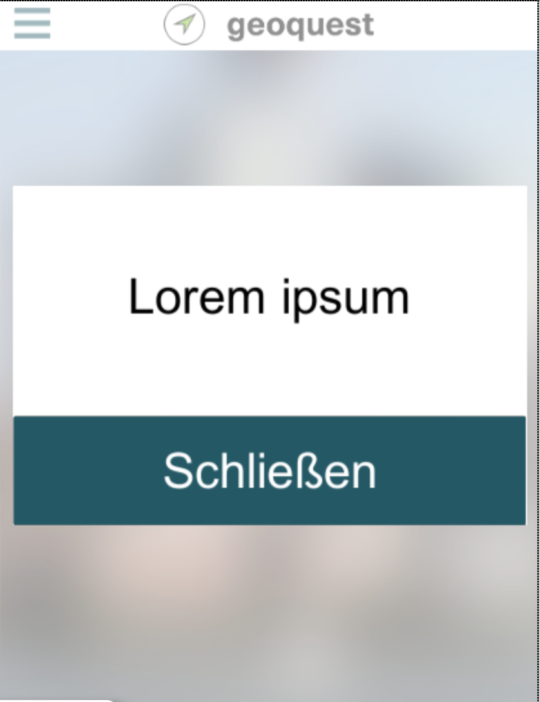
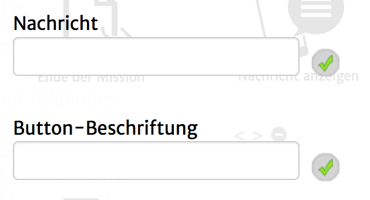

Mit diesem Aktionstyp ist es möglich, eine Nachrichten-Box / Notification anzuzeigen.
Beachte, dass alle Aktionen, die nach dieser kommen, direkt ausgeführt werden und nicht gewartet wird, bis die Box geschlossen wird.
Im Hintergrund könnte also schon die nächste Seite aufgerufen werden.
In der App sieht das ungefähr so aus:

Folgende Einstellungsmöglichkeiten gibt es für diesen Aktionstyp:
|  | Nachricht: Der Text, der in der Box zu sehen sein soll. Button-Beschriftung: Die Beschriftung des Buttons, der die Nachricht schließt. |